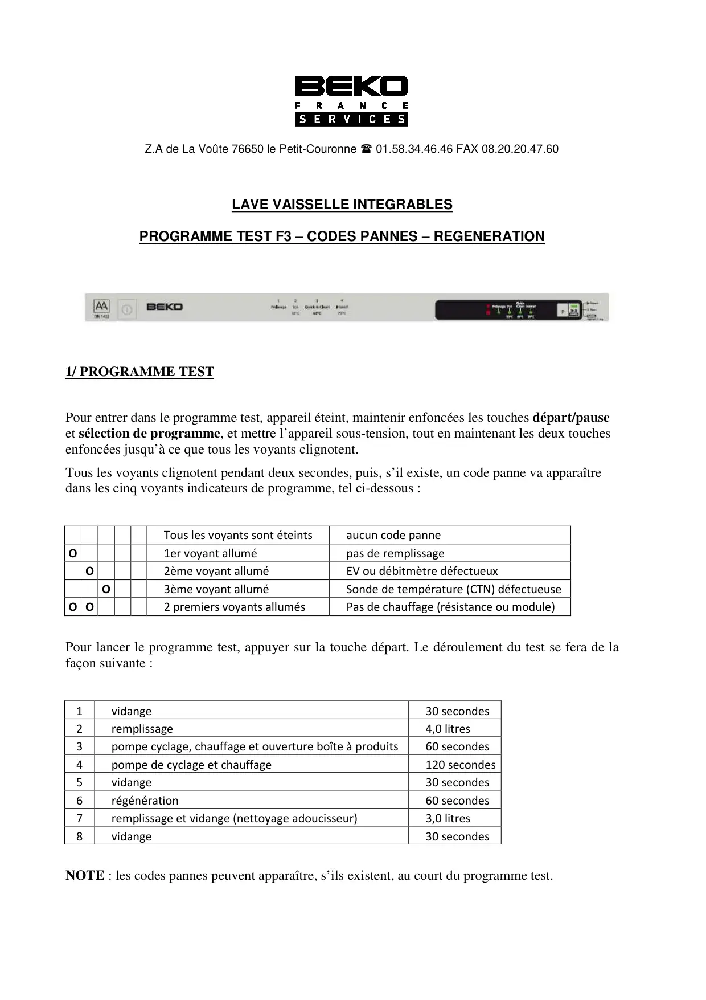
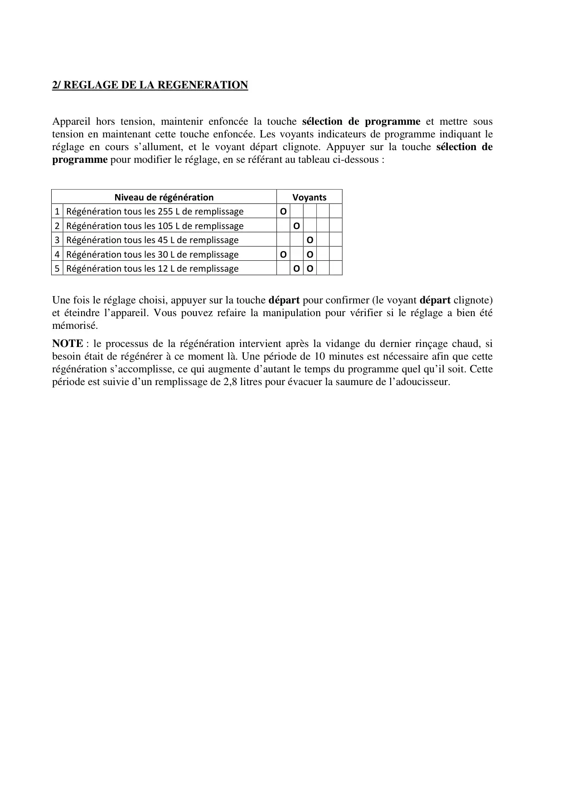

ProgrTest Réglages LVI F3 Fr

Z.A de La Voûte 76650 le Petit-Couronne 01.58.34.46.46 FAX 08.20.20.47.60LAVE VAISSELLE INTEGRABLESPROGRAMME TEST F3 – CODES PANNES – REGENERATION1/ PROGRAMME TESTPour entrer dans le programme test, appareil éteint, maintenir enfoncées les touches départ/pauseet sélection de programme, et mettre l’appareil sous-tension, tout en maintenant les deux touchesenfoncées jusqu’à ce que tous les voyants clignotent.Tous les voyants clignotent pendant deux secondes, puis, s’il existe, un code panne va apparaîtredans les cinq voyants indicateurs de programme, tel ci-dessous :Tous les voyants sont éteintsaucun code panneO1er voyant allumépas de remplissageO2ème voyant alluméEV ou débitmètre défectueuxO3ème voyant alluméSonde de température (CTN) défectueuseO O2 premiers voyants allumésPas de chauffage (résistance ou module)Pour lancer le programme test, appuyer sur la touche départ. Le déroulement du test se fera de lafaçon suivante :1vidange30 secondes2remplissage4,0 litres3pompe cyclage, chauffage et ouverture boîte à produits60 secondes4pompe de cyclage et chauffage120 secondes5vidange30 secondes6régénération60 secondes7remplissage et vidange (nettoyage adoucisseur)3,0 litres8vidange30 secondesNOTE : les codes pannes peuvent apparaître, s’ils existent, au court du programme test.
1 / 2
2/ REGLAGE DE LA REGENERATIONAppareil hors tension, maintenir enfoncée la touche sélection de programme et mettre soustension en maintenant cette touche enfoncée. Les voyants indicateurs de programme indiquant leréglage en cours s’allument, et le voyant départ clignote. Appuyer sur la touche sélection deprogramme pour modifier le réglage, en se référant au tableau ci-dessous :Niveau de régénérationVoyants1 Régénération tous les 255 L de remplissageO2 Régénération tous les 105 L de remplissageO3 Régénération tous les 45 L de remplissageO4 Régénération tous les 30 L de remplissageOO5 Régénération tous les 12 L de remplissageO OUne fois le réglage choisi, appuyer sur la touche départ pour confirmer (le voyant départ clignote)et éteindre l’appareil. Vous pouvez refaire la manipulation pour vérifier si le réglage a bien étémémorisé.NOTE : le processus de la régénération intervient après la vidange du dernier rinçage chaud, sibesoin était de régénérer à ce moment là. Une période de 10 minutes est nécessaire afin que cetterégénération s’accomplisse, ce qui augmente d’autant le temps du programme quel qu’il soit. Cettepériode est suivie d’un remplissage de 2,8 litres pour évacuer la saumure de l’adoucisseur.
2 / 2